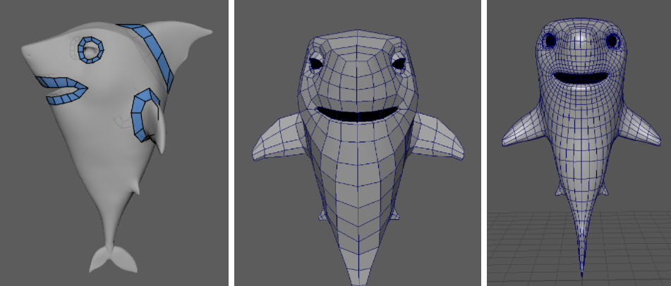
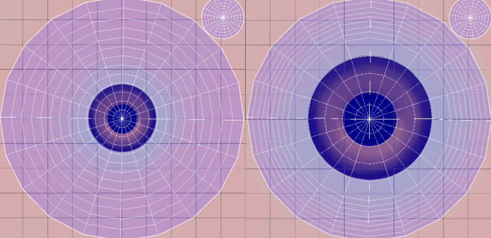
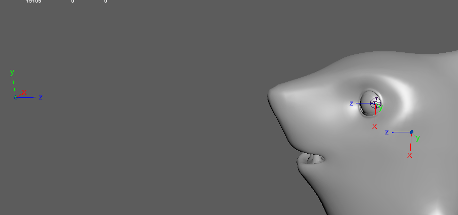
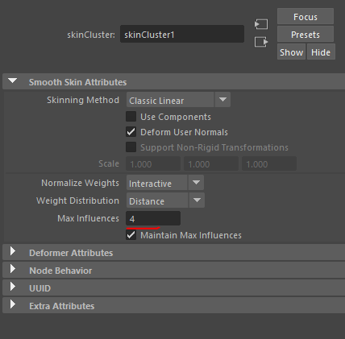

Create the 2D and 3D components for your hybrid avatar
In order to make a hybrid avatar, you will need to build a 3D body (3D Max, Maya, Modo, Blender, Cinema 4D, Zbrush, etc.) and a 2D face (Photoshop, Cubism).
We recommend following these steps for building the 3D body:
Concept and high poly
Retopology
UV mapping
Following textures conventions
Rigging
Skinning
Animating
1 Concept and high poly
Once you have a concept for the avatar, what you want it to represent and what it should look like, you can start working on the design of the avatar.
Design pro tip: when you design your avatar, take into consideration the design in relation to the animations and the accessories/elements of the avatar and how these will move.
Make sure that the area where the 2D component will be placed will remain clear and it will not stretch any additional animation. For example, make sure that the accessories/clothes will move/rotate without clipping other parts of the avatar.
2 Retopology
This process is meant to prepare your model to be used in gaming or in an animated environment creating another mesh that simplifies the original HD asset at a smaller file size that’s easier to use in animations and rendering.
The Animaze Editor does not support ngons (a face or polygon that is made up of five or more sides or edges connected by five or more vertices). After you have built the topology you can optimize the model (reducing the number of polygons). Read the entire process in our 3D documentation.
You can execute this process in which program you mastered (Blender, 3D max, Modo, etc.)

3 UV mapping
This step aims to transform a 3D mesh with all its sculpted details into 2D information, so that a 2D texture can be wrapped around the low poly mesh.
The model should have normalized mapping in 0-1 UV space.
Create unique mapped models (with no overlapping), because there are material types that need this kind of mapping. All polygons must have mapping coordinates.
These rules also apply for the mobile platform.
Try to allocate more space to your mapping in order to use more pixels from the texture.

4 Following textures conventions
This step refers to the channel attribution needed for the particularities of the avatar. We recommend building the textures according to our documentation, which can be found IN THIS DOCUMENTATION.
5 Rigging
The process in which you create the skeleton and its influence on the geometry is called rigging and it can be done in a lot of programs as long as you have conventions: blender, maya, 3d max, modo, etc taking into consideration that BipHead, BipRoot (optional), BipLEye, BipREye are mandatory in building your 3D model.
The Head bone and eyes bone axes should be oriented with Z in front and Y to the left.
The Eye bone Z axis should pass through the middle of the pupil. Once imported into the Animaze Editor, this feature will make the avatar look directly into the camera.
The Camera bone will be created separated from the avatar rigging, you should name it “Camera” and its orientation should be with Z facing the avatar. So the head and eyes will be oriented to the Camera and the Camera to them. See the pic below.

6 Skinning
The process in which you set the influence of the bones on the geometry is called skinning. The maximum limit of influences per vertex is 4, and then you can start painting influences.

7 Animations
Animations should be exported in .fbx format, in the \Animations folder of the avatar.
The mandatory animations for the 3D component are the following general movement ones (body motions):
-
Idle1 - is the base animation in which the avatar has micro-movements and breathes, the arms are near the body
-
Idle_pose - this is the first key from idle1 and from this position all the animations will
Check the Animaze animation appendix first, which contains the names conventions of animations and blendshapes.
Once you build your 3D body, you can move on to building your 2D face/animation.
You will build the facial animation inputs in Live2D and going forward the head rotation needed for the avatar will be taken over by the 3D geometry of the body. This means you can just build simple facial animations, like smiling, sad face, or eye closed, simplifying the avatar building process. The entire process can be found in the 2D avatar documentation.
You can create your 2D assets in an editing software like Photoshop that exports .psd files.
After you finished this, import the file into Cubism and create the animations using the parameters specified in the 2d documentation. Export the final project and import it in the editor using the diffuse texture slot.
Protip:
To create the normal map and specular you need to modify the initial 2D elements created in Photoshop and re-import them in Cubism, overwriting the diffuse texture, but saving it as a different file. This way you keep the animations and change only the source 2D elements.
Once this is done you can move on to merging the 3D body with the 2D face.